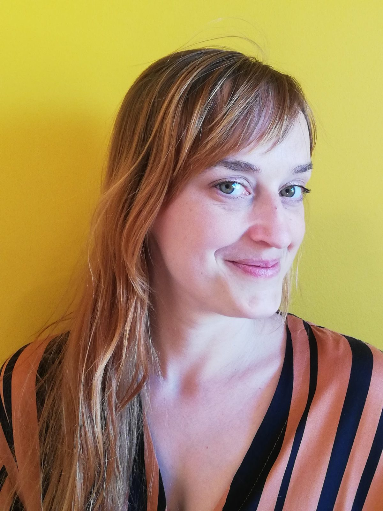

Lichaamswerk
Trauma-sensitief lichaamswerk volgens de Enrootment Method: ademwerk, beweging en bewuste aanraking om opnieuw verbinding te maken met jezelf.
€1502 uur→
Kinesist & lichaamswerker · Mortsel
Lichaamswerk, allergiebehandeling en toegepaste kinesiologie. Met een fascinatie voor de wijsheid van het lichaam.
Plan je afspraak →Wie ben ik?

Als kinesitherapeut ontdekte ik dat het behandelen van enkel de lichamelijke klacht niet altijd volstaat. Soms blijft een klacht terugkomen, of voelt het alsof er meer aan de hand is.
Lichaam en emoties kunnen niet los van elkaar gezien worden. In mijn begeleiding staat de mens als geheel centraal, in een veilige en respectvolle omgeving, afgestemd op wat voor jou haalbaar is.
Even vertragen
Ademwerk is een vast onderdeel van elke Enrootment-sessie. Probeer het hier even: volg de cirkel.
4 tellen in · 2 vasthouden · 6 tellen uit
Behandelingen
Trauma-sensitief lichaamswerk volgens de Enrootment Method: ademwerk, beweging en bewuste aanraking om opnieuw verbinding te maken met jezelf.
Een natuurlijke, pijnvrije methode die het lichaam helpt om allergieën, overgevoeligheden en blokkades te elimineren. Voor baby's tot ouderen.
Met gerichte spiertesten verbanden en onderliggende factoren in kaart brengen, voor een behandeling op maat.
Bel of mail gerust even. Samen bekijken we wat zinvol is.
0496 20 96 08
Mijn eerste Enrootment-sessie bij Sigrid. Ze stelde me meteen gerust en begeleidde me zorgzaam. De sessie bestond vooral uit lichaamswerk rond ademhaling, houding en spanning, met de nodige stiltes. Ik kwam volledig tot rust en kon stilstaan bij wat me in het verleden heeft geraakt. Een unieke ervaring waar ik graag naar terugkeer. Sterk aanbevolen.Stefaan
Sigrid weet wat ze doet en durft verder kijken en vragen. Haar betrokkenheid en uitgebreide kennis maken dat ze echt een verschil voor me maakt.Marie